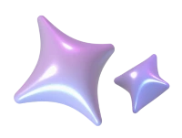
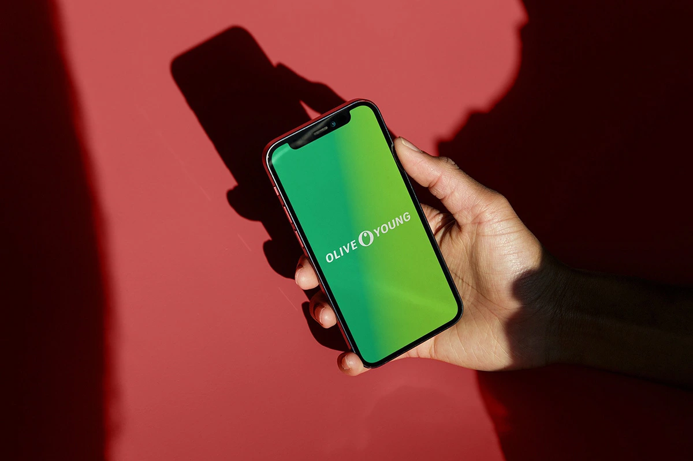
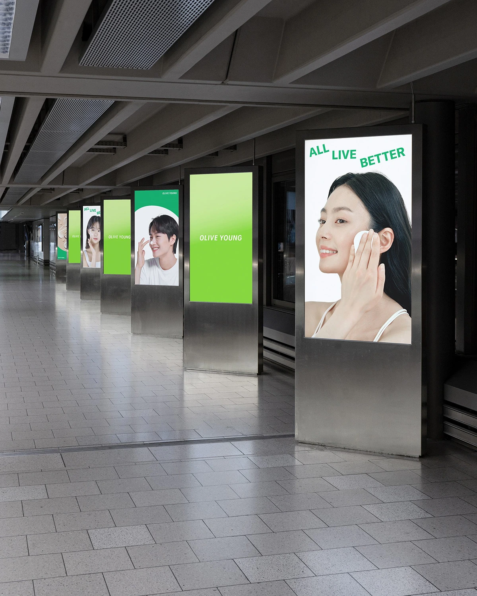

메인비주얼
I WANT TO BE A CREATIVE UI-DEVELOPER &PUBLISHER  I'M READY!
I WANT TO BE
A CREATIVE
UI-DEVELOPER
&PUBLISHER
I'M READY
about
안녕하세요, 웹 퍼블리셔 변성원입니다.
하나의 웹 페이지는 많은 사람들의 협업으로 이루어진다고 생각합니다.
데이터베이스 엔지니어로 근무한 경험과 퍼블리셔로 디자이너와 개발자 사이에서 1 대 1로 소통하며 의견을 조율한 경험, 그리고
풀스택 교육과정을 통한 프론트엔드와 백엔드, 서버단의 이해도를 바탕으로 좋은 팀워크를 만들어내어 협업할 자신이 있습니다.
하나의 웹 페이지는 많은 사람들의 협업으로 이루어진다고 생각합니다.
데이터베이스 엔지니어로 근무한 경험과 퍼블리셔로 디자이너와 개발자 사이에서 1 대 1로 소통하며 의견을 조율한 경험, 그리고
풀스택 교육과정을 통한 프론트엔드와 백엔드, 서버단의 이해도를 바탕으로 좋은 팀워크를 만들어내어 협업할 자신이 있습니다.
Projects / Clones
-

Guess
웹 표준에 근거한 시멘틱 태그를 사용하여 탄탄한 짜임새의 마크업과, swiper에 중점을 둔 PC 버전의 적응형 웹사이트입니다. #CUSTOM SWIPER #ADAPTIVE WEB Code Review -
Olive Young(pc)
JSON 비동기 통신을 이용해 데이터를 바인딩해 클론코딩한 적응형 PC 온라인 쇼핑몰입니다. #JSON #DATA BINDING #ADAPTIVE WEB #CUSTOM SWIPER Code Review -

Olive Young
JSON 비동기 통신을 이용해 데이터를 바인딩해 클론코딩한 모바일 온라인 쇼핑몰입니다. #JSON #DATA BINDING #MOBILE #CUSTOM SWIPER Code Review -
Naver
네이버 공식사이트를 클론 코딩하였으며 웹 접근성과 시맨틱 마크업 구성에 중점을 둔 PC 버전의 적응형 웹사이트입니다. #WEB ACCESSIBILITY #SEMANTIC #IR/IS #ADAPTIVE WEB Code Review -
City hall-Daejeon
대전시청 공식사이트를 클론 코딩하였으며 웹 접근성과 시맨틱 마크업 구성에 중점을 둔 반응형 웹사이트입니다. #RESPONSIVE WEB #WEB ACCESSIBILITY #SEMANTIC #CUSTOM SWIPER Code Review -
Studio Dragon
드라마 제작사 스튜디오드래곤 공식사이트를 리뉴얼하였으며 GSAP과 Lenis 스크롤을 이용한 효과에 중점을 둔 반응형 웹사이트입니다. #GSAP #LENIS #RESPONSIVE WEB Code Review
Projects / Front-end
~2024 WORKS
-
(01)
JAMONGLAB ver.1
-
* 자바스크립트 라이브러리
- Fullpage(2.9.7) + Gsap + Swiper - 전체 페이지 : Fullpage 효과 + 텍스트 하이라이트 효과
- 메인비주얼 : fullpage 슬라이드 안에 gsap 효과를 넣은 swiper로 이중 슬라이드 구성, swiper 슬라이드 전환시 텍스트가 아래에서 위로 노출, 마지막 슬라이드에서 스크롤 시 하단컨첸츠로 이동
- 하단컨텐츠 : canvas api와 css를 이용한 애니메이션
- #퍼블리싱 100% #반응형 #HTML #CSS #JQuery #FULLPAGE #CANVAS API #SWIPER #GSAP
-
-
(02)
JAMONGLAB ver.2
-
* 자바스크립트 라이브러리
- Lenis smooth scroll + Gsap + Swiper - 전체 페이지 : Lenis 효과
- 메인페이지 : swiper 세로 100% 가로 슬라이드로 구성, 슬라이드 전환시 각 슬라이드 컨텐츠의 애니메이션이 실행될 수 있도록 애니메이션 함수화 + swiper 옵션을 활용
- 서브페이지, 소개페이지 : 텍스트와 이미지를 gsap을 이용, 스크롤 트리거의 start와 end 포인트를 넓게 설정하여 부드러운 효과
- 자바스크립트의 matchMedia() 메서드 이용해서 반응형 gsap 대응
- #퍼블리싱 100% #반응형 #HTML #CSS #JQuery #LENIS SMOOTH SCROLL #SWIPER #GSAP
-
-
(03)
EVERYCLICK
-
* 자바스크립트 라이브러리
- Swiper + Circle progress + Aos - 전체 페이지 : Swiper 효과
- 섹션별로 실행되는 애니메이션을 함수로 만들고, swiper의 옵션인 slideChangeTransitionStart와 slideChangeTransitionEnd 을 활용하여 섹션 전환시에 애니메이션이 실행될 수 있도록 호출
- #퍼블리싱 100% #반응형 #HTML #CSS #JQuery #SWIPER #CIRCLE PROGRESS #AOS
-
-
(04)
XARVIS
-
* 자바스크립트 라이브러리
- Aos - 정보전달이 가장 중요한 사이트라는 것을 고려하여 가독성을 위해 각 기기별 폰트 사이즈나 이미지의 여백, 사이즈에 중점을 두고, 중요한 이미지와 텍스트는 aos 효과로 더욱 강조
- #퍼블리싱 100% #반응형 #HTML #CSS #JQuery #AOS
-
-
(05)
ERUNDG
-
* 기존 사이트 리뉴얼
- 기존 사이트를 리뉴얼하며 디자인 및 마크업 구조를 전면 수정하며 작업
- 크게 메인 페이지, 최저가 견적 조회 페이지, 마이페이지, 관리자 페이지로 구성
- 각 페이지 내 스텝 별 화면은 변동되는 마크업 구조와 해당 기능 동작을 위한 데이터 작업의 편리성을 위해 spring boot 환경에서 JSP를 이용해 기능별로 마크업 구조를 컴포넌트로 분리
- #퍼블리싱 100% #반응형 #HTML #CSS #JQuery #AOS #SPRING BOOT #JSP
-
-
(06)
CAREERDOT
-
* 자바스크립트 라이브러리
- Swiper - 정보전달이 가장 중요한 사이트라는 것을 고려하여 가독성을 위해 각 기기별 폰트 사이즈나 이미지의 여백, 사이즈에 중점을 두고, 메인페이지의 경우 높은 중요도를 고려하여 swiper 효과로 강조
- #퍼블리싱 100% #반응형 #HTML #CSS #JQuery #SWIPER
-
-
(07)
THE ZOOOM KOREA
-
* 자바스크립트 라이브러리
- Swiper + Aos - 기존 사이트 중 메인 페이지와 서브페이지 리뉴얼하며 디자인 및 마크업 구조를 전면 수정하며 작업
- 서비스 소개하는 메인비주얼의 중요도가 높은 점을 고려하여 swiper 슬라이드와 progress bar 애니메이션 추가하여 강조
- 정보전달이 가장 중요한 사이트라는 것을 고려하여 가독성을 위해 각 기기별 폰트 사이즈나 이미지의 여백, 사이즈에 중점을 두고, 중요한 이미지와 텍스트는 aos 효과로 더욱 강조
- #퍼블리싱 90% #반응형 #HTML #CSS #JQuery #SWIPER #AOS
-
-
(08)
THE ZOOOM PLUS
-
* 자바스크립트 라이브러리
- Swiper - 모바일 쇼핑몰 특성상 상품의 정보 전달이 중요한 점을 고려해 가독성에 중점을 두고, swiper를 사용해 페이지 내의 많은 상품 노출
- #퍼블리싱 100% #모바일 #HTML #CSS #JQuery #SWIPER
-
-
(09)
DREAM PASS
-
* 자바스크립트 라이브러리
- Swiper - 정보 전달이 목적인 앱의 특성을 고려해 가독성을 위해 각 텍스트의 폰트 크기에 중점을 두고, swiper를 사용해 페이지 내의 많은 상품 노출
- #퍼블리싱 100% #모바일 #HTML #CSS #JQuery #SWIPER
-
-
(10)
QUIZCLICK
- 정보 전달이 목적인 앱의 특성을 고려해 가독성을 위해 각 텍스트의 폰트 크기에 중점을 두고 작업
- #퍼블리싱 100% #모바일 #HTML #CSS #JQuery
-
(11)
REVIEWCLICK
- 개발 기한이 짧다는 점을 고려하여, 협업 효율성을 극대화하기 위해 BEM 클래스 네이밍과 변수를 적극적으로 활용하였고, 모바일 환경에 최적화된 대응을 위해 rem 단위를 사용하여 작업
- #퍼블리싱 100% #모바일 #HTML #CSS